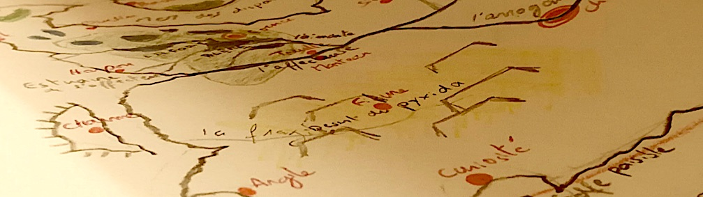

Le Grand Atlas de Terraan
"Le Grand Atlas de Terraan" est un jeu de rôle papier que j'ai commencé à écrire en été 2019, mélangeant les inspirations divers oeuvres d'Heroix Fantasy, mais aussi du jeu Aria (Game Of Roles) de Fibre Tigre.
Différentes ressources (scénarios, fiches personnages, cartes,...) seront bientôt disponible ici, en téléchargement libre et gratuit.